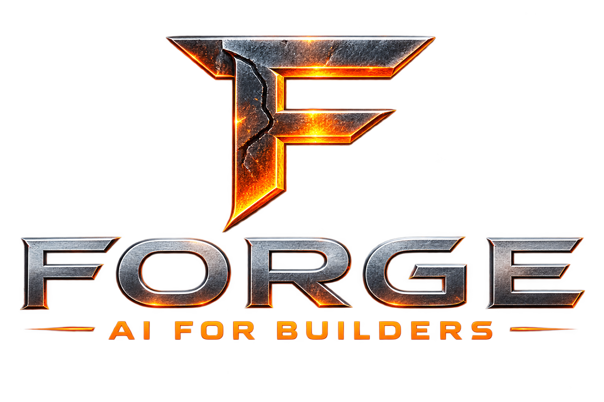

RAW POTENTIAL
Ideas, requirements, data and possibilities enter the system.

AI-POWERED BUILDING SYSTEM
Forge gives builders a focused environment to compose AI systems, automate execution and turn ideas into dependable software.
THE FORGE STORY
Like steel in a forge, ideas become stronger through a deliberate cycle of refinement, building and validation.
Ideas, requirements, data and possibilities enter the system.
AI planning shapes the goal into clear, actionable work.
Agents, models and tools execute with precision and context.
Validated, production-ready results emerge from the Forge.
BUILD VISUALLY
Compose the system instead of stitching it together by hand. Agents, models, tools and validation become one visual engineering workflow.
AUTOMATE THE WORK
Forge moves work through a controlled lifecycle—from understanding the goal to proving the result.
Decompose goals into an actionable multi-step plan.
GOAL → PLANOrchestrate agents and tools against the plan.
PLAN → BUILDVerify requirements, outputs and automated tests.
BUILD → PROVEDeliver dependable, production-ready results.
PROVE → SHIPBUILT FOR REAL WORK
01 Goal received .............. READY 02 Planning workflow .......... COMPLETE 03 Executing components ....... COMPLETE 04 Running validation ......... PASS 05 Production output .......... SHIPPED
FORGE WHAT'S NEXT
Build with AI. Automate the work. Ship what works.
Get Started